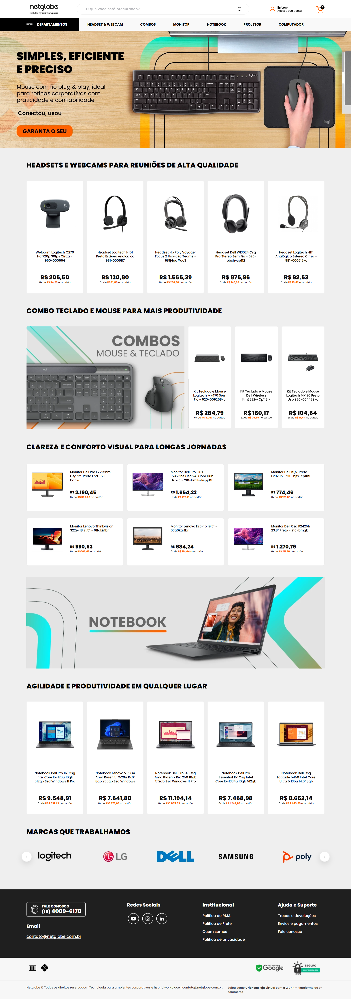

Netglobe Store
Uma experiência de compra com identidade
Minha participação
Participei da criação e personalização da loja virtual na plataforma WDNA, com atuação no design e na estilização da interface.
Interface e conteúdo
O trabalho envolveu adaptação visual e organização dos elementos para compor uma experiência alinhada à identidade da Netglobe. Transições animadas e efeitos de hover com acabamento refinado complementam a interface e tornam a descoberta dos produtos mais agradável.
Navegação
A responsividade e as melhorias na experiência de navegação fazem parte da personalização da loja, com HTML, CSS, JavaScript e Liquid.
